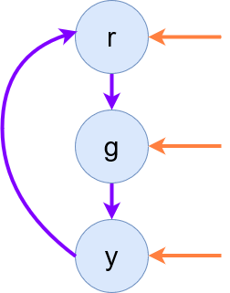

Specifications
Calvin (Deutschbein)
25 January 2023
Announcements
- Welcome to DATA-599: Cybersecurity!
- There was no homework due this week.
- Not to worry! I have something for next week.
Review Question
What is a set?
- The name for an unordering collection of elements
- The name for an unordered collection of elements
- The name for an element in a unordered collection of elements.
- The name for an element in a ordered collection of elements.
Some of these are always sets, but others may be sets. Which is never a set?
Review Question
Which of the following is true for both sets and sequences
- Both may track the number of copies of some element in a collection
- Both may sort elements by saying which comes before another
- Both may contain, as elements, other sets or sequences.
Why would we want some of these capabilities - or not?
Review Question
We said properties were sets of something. What?
- States
- Sequences
- Systems
- Times
What would it mean to have a set of any of these things?
Review Question
We said traces were sequences of something. What?
- States
- Sequences (that is, other sequences)
- Systems
- Times
What would it mean to have a sequence of any of these things?
Review Question
We said traces were sequences of states. Sequences are ordered. How are the sequences ordered?
- By an ordering specific to the states themselves
- By a sequence (that is, some other sequence)
- By a feature specific to the studied systems
- By the times at which states occur
Why would we order states in any particular way?
Properties
- An security policy may have properties.
- These security policies are distinct from the what? of a threat model
- Rather the security policy is the how? of a threat model
A security policy could be
nonresident_at_door -> door_locked
Trace Properties
- A trace is the sequence of states through which a system passes over time.
- A sequence is an ordering of something. So traces are in order.
- A state is the configuration of a system at some specific time point.
- A system here is the entity that implements the security policy
- We emphasize the notion of over time. Traces are time-based
Sets of Traces
A set is an ordered collection of elements (such as sequences).
A sequence is an ordered collection of elements (such as states).
A trace property is a set of traces.
A trace is a sequence of states.
Organization

Example

Enumeration
Last class, we enumerated the possible traces.
property[0] = ["GREEN_"]
property[1] = ["YELLOW"]
property[2] = ["RED___"]
property[3] = ["GREEN_", "YELLOW"]
This is bad. Why?
Specification
Rather than enumerate, let us specify.
The traffic light property is
the set of all sequences over precisely the states {"GREEN_", "YELLOW", "RED___"}
such that
the only state succeeding "GREEN_" is "YELLOW" and
the only state succeeding "YELLOW" is "RED___" and
the onle state succeeding "RED___" is "GREEN_".
This is still bad. Why?
Model Checking
A Kripke Structure is a tuple that models a state machine.
A state machine is a mathematical model of computation. It is an abstract machine that can be in exactly one of a finite number of states at any given time.
Model Checking
A Kripke Structure is a tuple {S, ...} that models a state machine.
- S is a finite set of states
- Kripke structures only work for finite state machines
- For the sake of this class, we can imagine infinite states if needed.
Model Checking
A Kripke Structure is a tuple {S, ...} that models a state machine.
- For a traffic light, S is:
{"GREEN_", "YELLOW", "RED___"} - For a commerical airliner, S is all combinations of people on the airliner and locations on the airliner.
- One element of S over 2 crew and 1 passenger could be:
{["CRW1", "DECK"], ["CRW2", "SERV"], ["PSG1","SEAT"]}
- One element of S over 2 crew and 1 passenger could be:
Model Checking
A Kripke Structure is a tuple {S, I, ...} that models a state machine.
- I is a subset of S, we denote this I ⊂ S
- Any state in I must be a state in S
- There may be states in S that are not in I
- These are the possible initial states of the state machine.
Model Checking
A Kripke Structure is a tuple {S, I, ...} that models a state machine.
- For a traffic light, I = S
{"GREEN_", "YELLOW", "RED___"} - For an airliner, I is all elements of S such that all passengers are seated.
- One element of I and therefore S could be:
{["CRW1", "DECK"], ["CRW2", "SERV"], ["PSG1","SEAT"]} - One element of S but not I could be:
{["CRW1", "DECK"], ["CRW2", "SERV"], ["PSG1","DECK"]}
- One element of I and therefore S could be:
Model Checking
A Kripke Structure is a tuple {S, I, ...} that models a state machine.
- S is a finite set of states
- I ⊂ S is the set of initial states.
Model Checking
A Kripke Structure is a tuple {S, I, R, ...} that models a state machine.
- R is a transition relation over S, we denote this R ⊂ S × S
- This just means R says whether one state may be transitioned to from another.
- R expresses them enumerating sequences of length two, called ordered pairs
- A starting state
- An ending state
- These states are the states in S
Model Checking
A Kripke Structure is a tuple {S, I, R, ...} that models a state machine.
- R is a transition relation over S, we denote this R ⊂ S × S
- This just means R says whether one state may be transitioned to from another.
- R expresses them enumerating sequences of length two, called ordered pairs
- BONUS/CHALLENGE: R is left-total.
A binary relation R ⊂ S × S is left-total if for all elements s of S there exists some ordered pair in R such that the first element of the ordered pair is s.
R ⊂ S × S is left-total ≔ ∀ s1 ∈ S, ∃ s2 ∈ S such that (s1,s2) ∈ R
Model Checking
A Kripke Structure is a tuple {S, I, R, ...} that models a state machine.
- For a traffic light, R is:
{("GREEN_", "YELLOW"), ("YELLOW", "RED___"), ("RED___", "GREEN_")} - For a commerical airliner, R must describe how crew may not move to the service station when passengers are present and vice versa, or some other arrangement.
- Note: Relations may be used to to express the arrangement of people on an airliner as well as express transition relations.
Model Checking
A Kripke Structure is a tuple {S, I, R, ...} that models a state machine.
- S is a finite set of states
- I ⊂ S is the set of initial states.
- R ⊂ S × S is a left-total transition relation.
Model Checking
A Kripke Structure is a 4-tuple {S, I, R, L} that models a state machine.
- L is a labeling function over S, we denote this L ⊂ S → ???
- This just means L provides a way of talking about the states in S
- We talk about these states using atomic propositions
- Propositions are expressions in propositional, or zeroth order, logic.
- They are simply true or false.
- Atomic propositions are simplest possible form of these logic expressions.
- L ⊂ S → 2AP
Model Checking
A Kripke Structure is a 4-tuple {S, I, R, L} that models transitions between over atomic propositions AP.
- L is a labeling function over S, we denote this L ⊂ S → 2AP
- Given AP, L tells us whether each is true or false (2 options) for every given state.
Model Checking
A Kripke Structure is a 4-tuple {S, I, R, L} that models transitions and AP.
- For a traffic light, AP could be the following, expressed as a proposition set:
{s == "GREEN_", s == "YELLOW", s == "RED___", s ∈ {"GREEN_", "YELLOW"}, s ∈ {"YELLOW", "RED___"}, s ∈ {"RED___", "GREEN_"}} - Propositions are often named using single lower cases letters in italics beginning with p
Model Checking
A Kripke Structure is a 4-tuple {S, I, R, L} that models transitions and AP.
- For a traffic light, AP could be the following:
AP = [p : state == "GREEN_", q : state == "YELLOW", r : state == "RED___", s : state ∈ {"GREEN_", "YELLOW"}, t : state ∈ {"YELLOW", "RED___"}, u : state ∈ {"RED___", "GREEN_"}] - Then the L would be given as :
{("GREEN_", {p, s, u}), ("YELLOW", {q, s, t}), ("RED___", {r, t, u})}
Model Checking
A Kripke Structure is a 4-tuple {S, I, R, L} that models transitions and AP.
- For a commercial airliner, we may want to use AP more intentionally:
- Let p denote there are passengers at the service station.
- Let q denote there are crew at the service station.
- Let r denote there all passengers are seated.
- Let s denote at least two crew are in the flight deck.
Model Checking
A Kripke Structure is a 4-tuple {S, I, R, L} that models transitions and AP.
- S is a finite set of states
- I ⊂ S is the set of initial states.
- R ⊂ S × S is a left-total transition relation.
- L ⊂ S → 2AP is the labelling relation.
Model Checking
A Kripke Structure is a 4-tuple {S, I, R, L} that models transitions and AP.
- S is a finite set of states and I ⊂ S is the set of initial states.
{"GREEN_", "YELLOW", "RED___"}{("GREEN_", "YELLOW"),
("YELLOW", "RED___"),
("RED___", "GREEN_")}{("GREEN_", {p, s, u}),
("YELLOW", {q, s, t}),
("RED___", {r, t, u})}A Kripke Structure modelling a traffic light is the 4-tuple...
({"GREEN_", "YELLOW", "RED___"},
{"GREEN_", "YELLOW", "RED___"},
{("GREEN_", "YELLOW"),
("YELLOW", "RED___"),
("RED___", "GREEN_")},
{("GREEN_", {p, s, u}),
("YELLOW", {q, s, t}),
("RED___", {r, t, u})})...over AP...
[p : state == "GREEN_",
q : state == "YELLOW",
r : state == "RED___",
s : state ∈ {"GREEN_", "YELLOW"},
t : state ∈ {"YELLOW", "RED___"},
u : state ∈ {"RED___", "GREEN_"}]Model Checking
A Kripke Structure is a 4-tuple {S, I, R, L} that models transitions and AP.
- This is still bad. Why?
Diagrams
Now that I've rigorously defined Kripke Structures, I am willing to tell you they are just diagrams.
- Clarke, Edmund & Grumberg, Orna & Jha, Somesh & Lu, Yuan & Veith, Helmut. (2003). Counterexample-guided abstraction refinement for symbolic model checking. J. ACM. 50. 752-794. 10.1145/876638.876643.

Diagrams
This differs from ours, but only slightly.
- The proposition labels are the same as the state name initials.
- r is the only accepted starting state.
- States are allowed to transition to the themselves
- Think of this is a distinct notion of time.
- I describe the only thing that changes time as a change in state.
- If we imagine that there is a transition every second, the green-to-green is needed.
- Think of this is a distinct notion of time.
Diagrams
- We borrow the initials-labels trick.
- We allow all starting states.
- We do not have states transition to themselves.

Diagrams
A Kripke Structure is a 4-tuple {S, I, R, L}
- S is the states, in blue.

Diagrams
A Kripke Structure is a 4-tuple {S, I, R, L}
- S is the states, in blue.
- I is the inital states, in orange.
- R is the relations, in purple.

Diagrams
A Kripke Structure is a 4-tuple {S, I, R, L}
- S is the states, in blue.
- I is the inital states, in orange.
- R is the relations, in purple.
- L is the labels, in black.
Your turn!
A commercial airliner threat model concerns crew and passengers, a flight deck and a service station. Draw a Kripke Structure and specify
- S is a finite set of states
- I ⊂ S is the set of initial states.
- R ⊂ S × S is a left-total transition relation.
- L ⊂ S → 2AP is the labelling relation.
Form groups of 2-4 and create a document of a format accessible to you. I used HTML. [up to 60 min]
Homework
Identify something in your life (an app, a work thing, a building, a company) with security features.
- It may be the same or a different thing.
- You may wish to focus on a small part of your previous example, in the case of more complex systems.
- Update you diagram to be a Kripke Structure.
- Fully specify each of {S, I, R, L}
Be ready to present your document at 6 PM on 1 Feb!